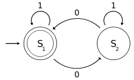

Working log for Some Awesome Project.
2017-12-21 1:56 AM
Log entry about some project I was working on:Here are some thoughts - keeping a new log now.
Here are some other thoughts on the same subject.
2017-12-21 1:57 AM
Different Log Subject:Here is a different day's thoughts.
And some other things that go with them.
2017-12-21 1:58 AM
A log entry that requires some visual explanation:An image that explains the situation (from Wikimedia - public domain):

Some comments about the above picture.
Note:
Forgot to mention something important:
Let's do a test on bullet points (hyphens at this point):
- First
- Second
- Third
k-Means:
Here's a cool link to a nice k-means clustering algo written in c:
kmeans.c
2017-12-21 1:59 AM
Some file-inclusion with syntax highlighting tests:Let's include only a few lines from this file:
import os
import sys
things = 'some cool stuff'.split()
def main():
for thing in things:
if thing:
print(thing)
else:
print("There is no thing.")
Now, how about a few more from the same file:
def foo():
''' Not implemented.'''
pass
And an output file: (text format - which can also take a range, so you don't need more than one).
Here is some output:
foo bar you bar
dood.
2017-12-21 2:21 AM
MathJax Test:When \(a \ne 0\), there are two solutions to \(ax^2 + bx + c = 0\) and they are
$$x = {-b \pm \sqrt{b^2-4ac} \over 2a}$$
2017-12-21 9:16 AM
Local Server testing with Python & Chrome:Serve local files with:
python -m http.server
2017-12-21 9:35 AM
New Entry - Just to develop the idea further ...Hey! A new entry !!
(image is also wikimedia - public domain)

tons_of_python